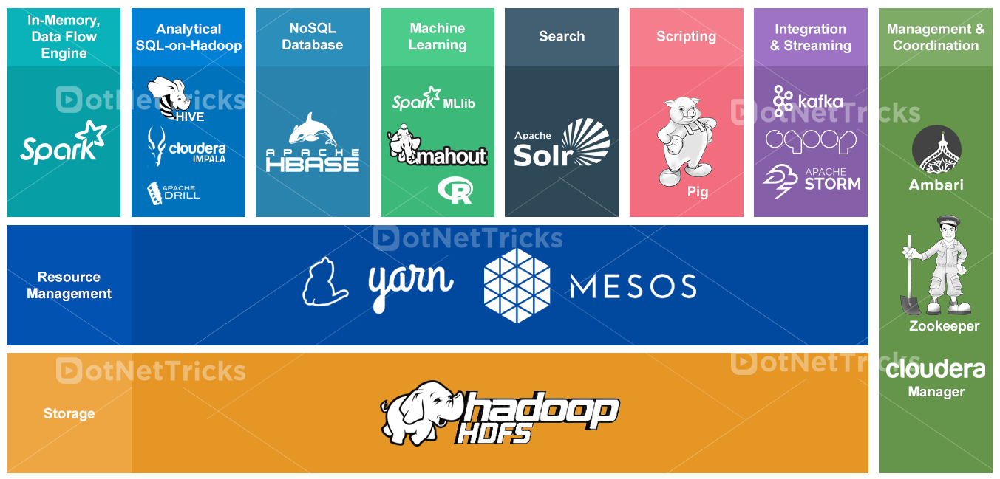
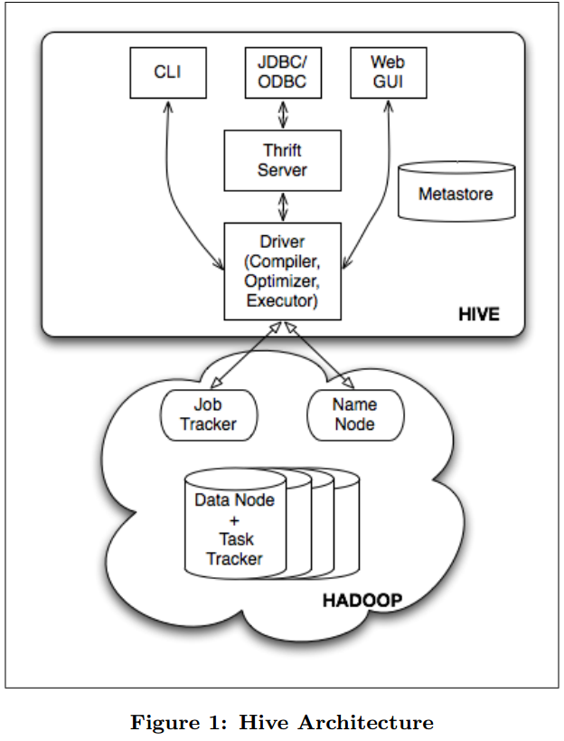
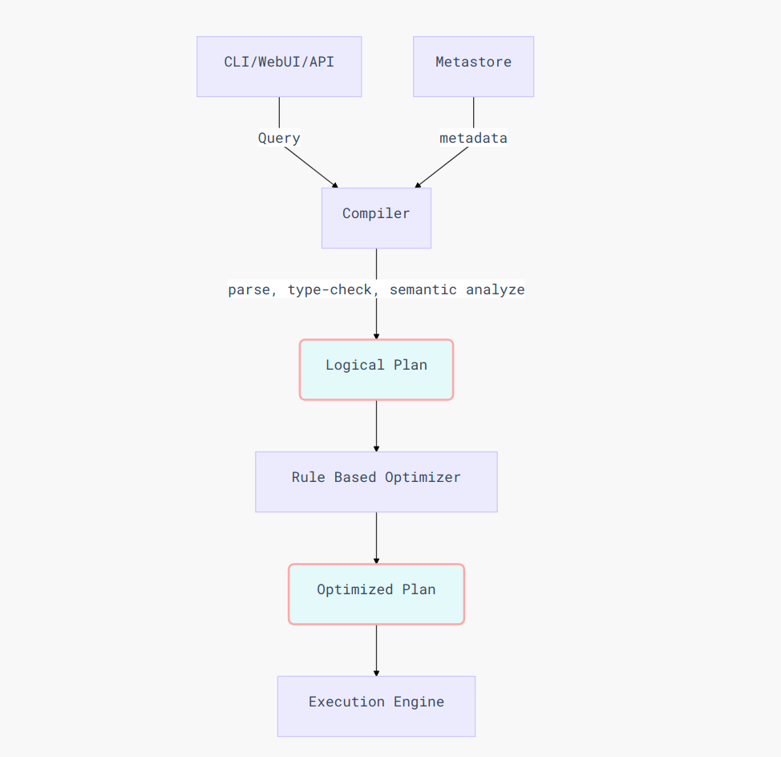
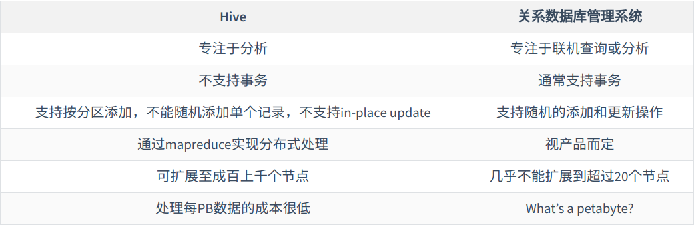
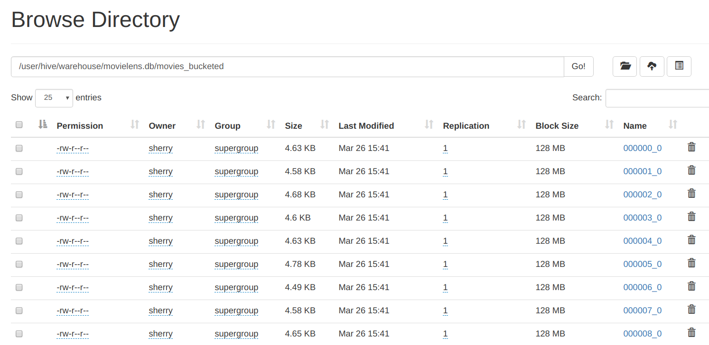
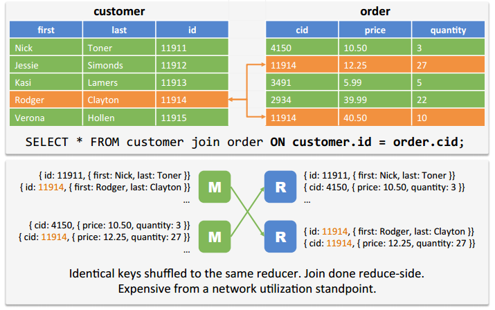
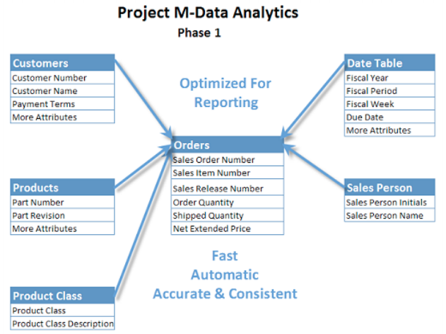
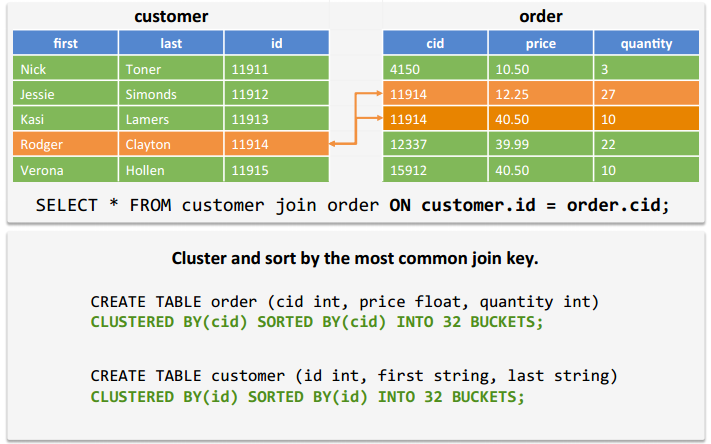

name: inverse layout: true class: center, middle, inverse --- #A Brief Introduction to **HIVE** ##### 李晓煜 2015202104 --- ## 目录 ### 1. Hive简介 ### 2. Hive的数据模型 ### 3. Hive的查询语言 ### 4. Hive架构 ### 5. 查询的生命周期 ### 6. Demonstration --- ## 一、Hive简介 --- layout: false .left-column[ ## 什么是Hive？ ] .right-column[ - Hive是基于Hadoop的，用于读、写和管理大型数据集的`数据仓库`软件，由Facebook实现并开源。它依赖分布式存储，使用`SQL语法`进行查询。 ] --- .left-column[ ## 什么是Hive？ <br><br><br> ## Hive的特点？ ] .right-column[ - Hive是基于Hadoop的，用于读、写和管理大型数据集的`数据仓库`软件，由Facebook实现并开源。它依赖分布式存储，使用`SQL语法`进行查询。 <hr> - 通过简单的类SQL的语句来实现`结构化`数据的ETL (extract / transform / load) 操作，并生成数据分析结果。 - 可以直接读取Apache HDFS或Apache HBase中的数据 - 通过Apache Tez、Apache Spark或MapReduce执行查询 - Hive的本质是将SQL语句`转换为MapReduce任务`运行，使不熟悉MapReduce的用户方便地利用**HQL**处理和计算存储在HDFS上的数据 - 它专为**OLAP**设计，`不是一个关系型数据库，也不是被设计用于OLTP`，不适合进行实时查询和行级更新 ] ??? 不支持单行的增删改 有延迟 所以不适合OLTP --- layout: false name: hadoop-eco ## Hadoop生态  ??? HBase的位置不准确，面向列的数据库 Pig用于半结构化和非结构化数据的处理 HDFS：Hadoop Distributed File System --- template: inverse ## 二、Hive的数据模型 <br>  --- .left-column[ ## Tables - 表 ] .right-column[ Hive中的表与关系数据库中的表类似，每一个表在HDFS中拥有一个目录。表中存储的数据是`序列化`的，用户可以将数据与序列格式关联起来。 - 序列化是对象转化为字节序列的过程，反序列化是字节码恢复为对象的过程 - Hive支持integer, float, string等原始数据类型，也支持map, list, struct等复杂的数据类型。用户可以通过添加自定义的序列化和反序列化的方法 (SerDe) 来添加新的数据格式和数据类型。 ] --- .left-column[ ## Tables - 表 ## Partitions - 分区 ] .right-column[ 分区决定了数据在目录中的分布。 - 举例： 表T被存储在文件夹`/wh/T`中，在列 `ds` 和 `ctry` 上设置了分区，那么 `ds` 的值为 `20190327` 且 `ctry` 值为 `China` 的数据将会被存储在子目录 `/wh/T/ds=20190327/ctry=China` 中。 ] --- .left-column[ ## Tables - 表 ## Partitions - 分区 ## Buckets - 桶 ] .right-column[ 在分区的基础上对数据进行进一步的划分，采用对列值哈希，然后除以桶的个数求余的方式决定该条记录存放在哪个桶当中。 - 举例：在上例分区的基础上对 `userid` 列进行分桶，则会产生如下目录： `/wh/T/ds=20190327/ctry=China/part-0000` <br>`/wh/T/ds=20190327/ctry=China/part-0001`等 **优点**： - 对于在相同列上进行分桶的表，可以使用Map端连接，只将保存相同列值的桶进行连接操作即可，大大减少了需要连接的数据量； - 使取样更加方便。 ] --- template: inverse ## 三、Hive的查询语言 --- Hive使用**类SQL**的查询语言`Hive-SQL`，它支持选择、投影、连接、聚合、 联合以及子查询操作。 - Data Definition Language - 数据定义语言 `{CREATE / ALTER / DROP} {TABLE / VIEW / PARTITION}` - Data Manipulation Language - 数据操纵语言 `INSERT OVERWRITE` - Query Language - 查询语言 HQL语言支持多表插入 (**Multi-Table Insert**)，即在相同的数据输入上用单条查询语句执行多个查询 - 扩展语言 可以调用Java实现的用户定义列变换函数、用户定义聚合函数，还可以使用其他语言编写的map-reduce脚本 --- template: inverse ## 四、Hive架构 --- .pull-left[  ] - **External Interfaces**: 包括CLI、WebUI和API（如JDBC、ODBC） - **Thrift Server**: 用于从API处执行HQL语句 - **Metastore**: 用于存储系统目录和表、列、分区的`元数据`（使用derby或mysql数据库存储，不能使用HDFS因为不支持随机存取） - **Driver**<br>（包括Compiler, Optimizer, Executor） 管理HQL语句的生命周期，追踪执行时间、返回的结果条数等数据 - **Compiler**: 在Driver收到HQL语句时，将其翻译为一系列的map-reduce任务执行，这些任务组成了一个`有向无环图（DAG）` - **Execution Engine**: Driver会将每个map-reduce任务按拓扑顺序传递给Execution Engine执行。目前hive使用`Hadoop`作为执行引擎 --- ### 优化器的工作原理 <br> - 将多个使用相同键的连接操作合并成一个连接，以便形成一个map-reduce任务； - 为连接、分组和自定义map-reduce运算添加`重分区`操作，这些重分区操作意味着map操作与reduce操作的分界点； - 提前对列进行`修剪`，将谓词与扫描运算符放在一起以减少数据传送的次数； - 如果数据表已经进行了分区，则将不需要的分区修剪掉； - 如果遇到取样操作，则将不需要的桶修剪掉。 --- template: inverse ## 五、查询的生命周期 --- .center[] --- template: inverse ## Hive与传统SQL数据库的比较 <br> .center[] --- template: inverse # Demonstration --- .left-column[ ## 启动hadoop ] .right-column[ ```console $ start-dfs.sh ``` ```console Starting namenodes on [localhost] Starting datanodes Starting secondary namenodes [sherry-HP-ENVY-Notebook-13-ab0XX] ``` ] --- .left-column[ ## 启动hadoop ## 启动 hive ] .right-column[ ```console $ hive ``` ``` SLF4J: Class path contains multiple SLF4J bindings. SLF4J: Found binding in [jar:file:/opt/hive/lib/log4j-slf4j-impl-2.10.0.jar!/org/slf4j/impl/StaticLoggerBinder.class] SLF4J: Found binding in [jar:file:/usr/local/hadoop/share/hadoop/common/lib/slf4j-log4j12-1.7.25.jar!/org/slf4j/impl/StaticLoggerBinder.class] SLF4J: See http://www.slf4j.org/codes.html#multiple_bindings for an explanation. SLF4J: Actual binding is of type [org.apache.logging.slf4j.Log4jLoggerFactory] SLF4J: Class path contains multiple SLF4J bindings. SLF4J: Found binding in [jar:file:/opt/hive/lib/log4j-slf4j-impl-2.10.0.jar!/org/slf4j/impl/StaticLoggerBinder.class] SLF4J: Found binding in [jar:file:/usr/local/hadoop/share/hadoop/common/lib/slf4j-log4j12-1.7.25.jar!/org/slf4j/impl/StaticLoggerBinder.class] SLF4J: See http://www.slf4j.org/codes.html#multiple_bindings for an explanation. SLF4J: Actual binding is of type [org.apache.logging.slf4j.Log4jLoggerFactory] Hive Session ID = e95e48ee-b6a7-482b-a68a-45a70597bc9a Logging initialized using configuration in jar:file:/opt/hive/lib/hive-common-3.1.1.jar!/hive-log4j2.properties Async: true Hive-on-MR is deprecated in Hive 2 and may not be available in the future versions. Consider using a different execution engine (i.e. spark, tez) or using Hive 1.X releases. hive> ``` ] --- .left-column[ ## 启动hadoop ## 启动 hive ## 将数据文件复制到hdfs ] .right-column[ ```console $ hdfs dfs -mkdir /movielens $ hdfs dfs -copyFromLocal ~/Documents/dataWarehouse/ml-1m/*.csv /movielens/ $ hdfs dfs -ls /movielens ``` ```terminal Found 3 items -rw-r--r-- 1 sherry supergroup 163542 2019-03-26 09:36 /movielens/movies.csv -rw-r--r-- 1 sherry supergroup 21593504 2019-03-26 09:36 /movielens/ratings.csv -rw-r--r-- 1 sherry supergroup 110208 2019-03-26 09:36 /movielens/users.csv ``` ] --- .left-column[ ## 启动hadoop ## 启动 hive ## 将数据文件复制到hdfs ## 创建数据表 ] .right-column[ ```sql -- 创建movies表 CREATE EXTERNAL TABLE movies (MovieID INT, Title varchar(60), Genres varchar(60)) ROW FORMAT DELIMITED FIELDS TERMINATED BY ',' LINES TERMINATED BY "\n" STORED AS TEXTFILE LOCATION '/movielens/ml-1m/mvs.txt'; -- 创建ratings表 CREATE EXTERNAL TABLE ratings (UserID INT, MovieID INT, Rating INT, `Timestamp` STRING) ROW FORMAT DELIMITED FIELDS TERMINATED BY ',' LINES TERMINATED BY "\n" STORED AS TEXTFILE LOCATION '/movielens/ml-1m/rts.txt'; ``` ] --- count: false .left-column[ ## 启动hadoop ## 启动 hive ## 将数据文件复制到hdfs ## 创建数据表 ] .right-column[ ```sql -- 创建users表 CREATE EXTERNAL TABLE users (UserID INT, Gender STRING, Age INT, Occupation INT, ZIP INT) ROW FORMAT DELIMITED FIELDS TERMINATED BY ',' LINES TERMINATED BY "\n" STORED AS TEXTFILE LOCATION '/movielens/ml-1m/usr.txt'; ``` ] --- .left-column[ ## 启动hadoop ## 启动 hive ## 将数据文件复制到hdfs ## 创建数据表 ## 导入数据 ] .right-column[ ```sql LOAD DATA INPATH '/movielens/ml-1m/movies.csv' INTO TABLE movies; LOAD DATA INPATH '/movielens/ml-1m/ratings.csv' INTO TABLE ratings; LOAD DATA INPATH '/movielens/ml-1m/users.csv' INTO TABLE users; ``` ```sql SELECT * FROM movies LIMIT 10; ``` ```sql 1 Toy Story (1995) Animation|Children's|Comedy 2 Jumanji (1995) Adventure|Children's|Fantasy 3 Grumpier Old Men (1995) Comedy|Romance 4 Waiting to Exhale (1995) Comedy|Drama 5 Father of the Bride Part II (1995) Comedy 6 Heat (1995) Action|Crime|Thriller 7 Sabrina (1995) Comedy|Romance 8 Tom and Huck (1995) Adventure|Children's 9 Sudden Death (1995) Action 10 GoldenEye (1995) Action|Adventure|Thriller ``` ] --- .left-column[ ## 启动hadoop ## 启动 hive ## 将数据文件复制到hdfs ## 创建数据表 ## 导入数据 ## 连接查询 ] .right-column[ ### 查询被观看次数最多的十部电影 ```sql SELECT movies.MovieID, movies.Title, COUNT(DISTINCT ratings.UserID) as views FROM movies JOIN ratings ON (movies.MovieID = ratings.MovieID) GROUP BY movies.MovieID, movies.Title ORDER BY views DESC LIMIT 10; ``` ] --- count: false .left-column[ ## 启动hadoop ## 启动 hive ## 将数据文件复制到hdfs ## 创建数据表 ## 导入数据 ## 连接查询 ] .right-column[ ### 查询被观看次数最多的十部电影 ```sql 2858 American Beauty (1999) 3428 260 Star Wars: Episode IV - A New Hope (1977) 2991 1196 Star Wars: Episode V - The Empire Strikes Back (1980) 2990 1210 Star Wars: Episode VI - Return of the Jedi (1983) 2883 480 Jurassic Park (1993) 2672 2028 Saving Private Ryan (1998) 2653 589 Terminator 2: Judgment Day (1991) 2649 2571 Matrix 2590 1270 Back to the Future (1985) 2583 593 Silence of the Lambs 2578 Time taken: 20.208 seconds, Fetched: 10 row(s) ``` ] --- ### hive与mysql执行时间对比 <br> <br> <br> .pure-table.pure-table-bordered.pure-table-striped[ | 项目 | hive | mysql | | ------------------ | ----------- | --------- | | load-movies | 0.712s | **0.09s** | | load-ratings | **0.195s** | 2.95s | | load-users | 0.238s | **0.09s** | | query-top10 viewed | **20.208s** | 248.42s | ] --- .left-column[ ## 启动hadoop ## 启动 hive ## 将数据文件复制到hdfs ## 创建数据表 ## 导入数据 ## 连接查询 ## 创建分区表 ] .right-column[ ```sql --创建新的分区表 CREATE TABLE users1(userid INT, Age INT, Occupation INT, ZIP INT) PARTITIONED BY (gender STRING); --设置动态分区 set hive.exec.dynamic.partition=true; set hive.exec.dynamic.partition.mode=nonstrict; --向分区表中插入数据 INSERT INTO TABLE users1 PARTITION(gender) SELECT userid, age, occupation, zip, gender as gender FROM users; ``` ] --- count: false .left-column[ ## 启动hadoop ## 启动 hive ## 将数据文件复制到hdfs ## 创建数据表 ## 导入数据 ## 连接查询 ## 创建分区表 ] .right-column[ ```console $ hdfs dfs -ls /user/hive/warehouse/movielens.db/users1 Found 2 items drwxr-xr-x - sherry supergroup 0 2019-03-26 15:19 */user/hive/warehouse/movielens.db/users1/gender=F drwxr-xr-x - sherry supergroup 0 2019-03-26 15:19 */user/hive/warehouse/movielens.db/users1/gender=M ``` ] --- .left-column[ ## 启动hadoop ## 启动 hive ## 将数据文件复制到hdfs ## 创建数据表 ## 导入数据 ## 连接查询 ## 创建分区表 ## 创建分桶表 ] .right-column[ ```sql -- 创建movies_bucketed表 CREATE TABLE movies_bucketed (MovieID INT, Title varchar(60), Genres varchar(60)) CLUSTERED BY(movieid) INTO 32 BUCKETS; -- 载入数据 INSERT OVERWRITE TABLE movies_bucketed SELECT Movieid, Title, Genres from movies; ``` ] --- count: false .left-column[ ## 启动hadoop ## 启动 hive ## 将数据文件复制到hdfs ## 创建数据表 ## 导入数据 ## 连接查询 ## 创建分区表 ## 创建分桶表 ] .right-column[ ```sql -- 创建ratings_bucketed表 CREATE TABLE ratings_bucketed(Userid INT, Movieid INT, Rating INT, `Timestamp` STRING) CLUSTERED BY(movieid) INTO 32 BUCKETS; -- 载入数据 INSERT OVERWRITE TABLE ratings_bucketed SELECT Userid, Movieid, Rating, `Timestamp` FROM ratings ``` ] --- <br> <br>  --- .left-column[ ## 启动hadoop ## 启动 hive ## 将数据文件复制到hdfs ## 创建数据表 ## 导入数据 ## 连接查询 ## 创建分区表 ## 创建分桶表 ] .right-column[ ```sql set hive.optimize.bucketmapjoin=true; SELECT movies_bucketed.Movieid, movies_bucketed.Title, COUNT(DISTINCT ratings_bucketed.Userid) AS views FROM movies_bucketed JOIN ratings_bucketed ON (movies_bucketed.Movieid = ratings_bucketed.Movieid) GROUP BY movies_bucketed.Movieid, movies_bucketed.Title ORDER BY views DESC LIMIT 10; ``` ```sql Time taken: 17.914 seconds, Fetched: 10 row(s) ``` ```SQL SELECT * FROM movies_bucketed TABLESAMPLE(BUCKET 3 OUT OF 32); ``` ] --- ## Hive中的JOIN策略 <br> .pure-table.pure-table-bordered.pure-table-striped[ | Join策略类型 | 方法 | 优点 | 缺点 | | ---------------------- | ------------------------------------------------------------ | -------------------------------------- | -------------------------------------------- | | Shuffle Join | 通过对数据进行重新排序与map reduce实现连接操作 | 不需要考虑数据规模 | 速度慢，消耗的资源多 | | Broadcast Join | 小的数据表会被加载到所有节点的内存中，mapper会扫描大的数据表并进行连接 | 非常快，只需要对大的数据表进行一次扫描 | 较小的数据表的规模必须足够小，能够被内存容纳 | | Sort-Merge-Bucket Join | mapper利用连接键的相同同分布进行高效的连接 | 对于任何规模的数据表都非常快 | 数据必须预先进行排序和分桶 | ] --- ## Shuffle Join <br>  --- count: false ## Hive中的JOIN策略 <br> .pure-table.pure-table-bordered.pure-table-striped[ | Join策略类型 | 方法 | 优点 | 缺点 | | ---------------------- | ------------------------------------------------------------ | -------------------------------------- | -------------------------------------------- | | Shuffle Join | 通过对数据进行重新排序与map reduce实现连接操作 | 不需要考虑数据规模 | 速度慢，消耗的资源多 | | Broadcast Join | 小的数据表会被加载到所有节点的内存中，mapper会扫描大的数据表并进行连接 | 非常快，只需要对大的数据表进行一次扫描 | 较小的数据表的规模必须足够小，能够被内存容纳 | | Sort-Merge-Bucket Join | mapper利用连接键的相同同分布进行高效的连接 | 对于任何规模的数据表都非常快 | 数据必须预先进行排序和分桶 | ] --- ## Broadcast Join <br> --- <!-- count:false --> ## Hive中的JOIN策略 <br> .pure-table.pure-table-bordered.pure-table-striped[ | Join策略类型 | 方法 | 优点 | 缺点 | | ---------------------- | ------------------------------------------------------------ | -------------------------------------- | -------------------------------------------- | | Shuffle Join | 通过对数据进行重新排序与map reduce实现连接操作 | 不需要考虑数据规模 | 速度慢，消耗的资源多 | | Broadcast Join | 小的数据表会被加载到所有节点的内存中，mapper会扫描大的数据表并进行连接 | 非常快，只需要对大的数据表进行一次扫描 | 较小的数据表的规模必须足够小，能够被内存容纳 | | Sort-Merge-Bucket Join | mapper利用连接键的相同同分布进行高效的连接 | 对于任何规模的数据表都非常快 | 数据必须预先进行排序和分桶 | ] --- ## Sort-Merge-Bucket Join <br>  --- ### 参考文献 [1] Thusoo A , Sarma J S , Jain N , et al. Hive - A Warehousing Solution Over a Map-Reduce Framework[J]. Proceedings of the VLDB Endowment, 2009, 2(2):1626-1629. [2] Thusoo A , Sarma J S , Jain N , et al. Hive – A Petabyte Scale Data Warehouse Using Hadoop[J]. 2010. [3] O'Malley O. Hive Tutorial[EB/OL]. https://cwiki.apache.org/confluence/display/Hive/Tutorial, 2019-03-05/2019-03-26. [4] Cook I. Hive LanguageManual[EB/OL]. https://cwiki.apache.org/confluence/display/Hive/LanguageManual, 2018-10-05/2019-03-26. [5] Verma A. Getting Started With Hive[EB/OL]. https://towardsdatascience.com/getting-started-with-hive-ad8a93862f1a, 2018-06-12/2019-03-26. [6] Muise A. 2013 July 23 Toronto Hadoop User Group Hive Tuning[EB/OL]. https://www.slideshare.net/adammuise/2013-jul-23thughivetuningdeepdive, 2013-06-23/2019-03-26. --- name: last-page template: inverse # Thank you! Slideshow created using [remark](http://github.com/gnab/remark).